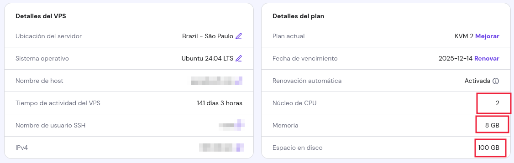
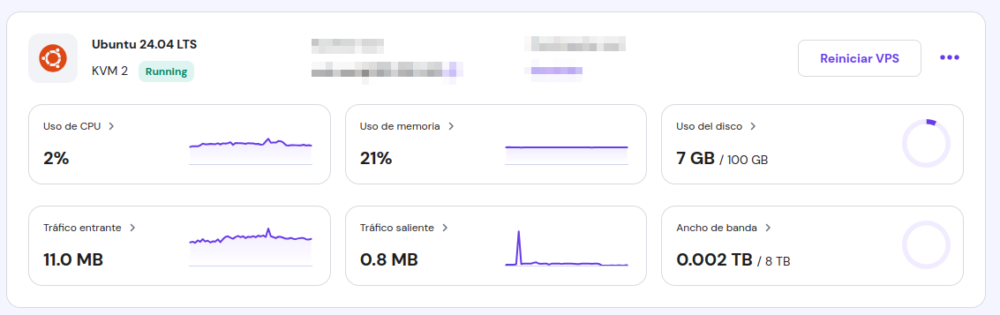

5. Despliegue en servidor con IP pública
Para que la WebApp fuera accesible al público, fue necesario desplegarla en un servidor con un
nombre de dominio y un servidor virtual privado con IP pública.
Adquirimos un dominio personalizado, configuramos los DNS y montamos el sistema completo
(backend, frontend y Keycloak) en un entorno productivo que hoy funciona como el sitio web oficial del proyecto.
El costo del dominio por un año fué de AR$ 1.844 y el costo del servidor privado por una año fué de AR$ 131.388.
El servidor cuenta con dos núcleos, 8GB de RAM y 100 GB de almacenamiento.
(Existen alternativas más económicas e incluso gratuitas para ambas soluciones)


¿Preguntas?
¡Gracias por su atención!
Estamos a disposición para responder sus consultas.
Contacto:
Federico Thaiel Borgna - federico.tahiel.borgna@gmail.com
Cayetano Simón Paradiso - cayetanosimonparadiso@gmail.com
Repositorios:
Backend |
Frontend